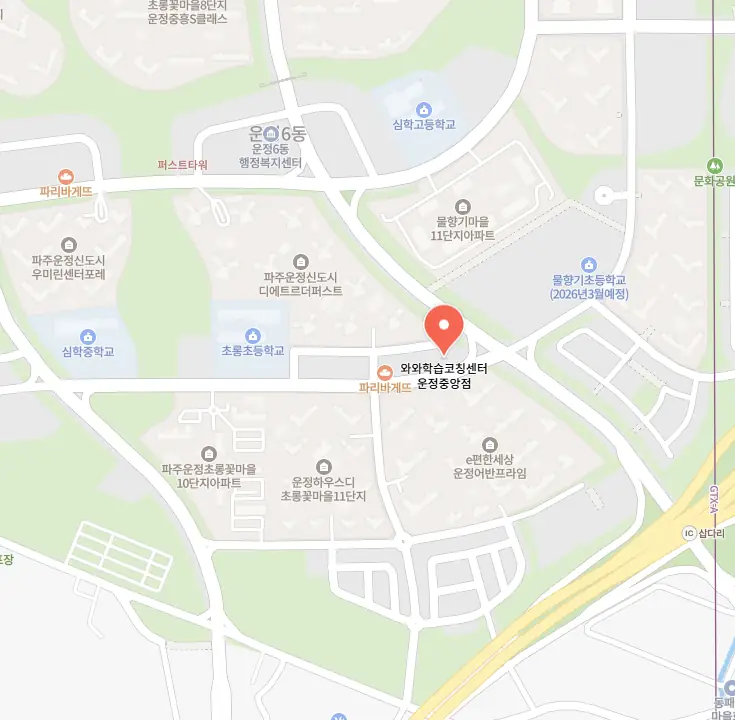

주변 동패동 개별지도학원을 직접 방문해 교실 분위기를 살펴보는 것이 첫 단계예요. 강사의 교육 철학과 학생과의 상호작용을 관찰하면서 학습 효과를 직관적으로 판단할 수 있어요. 교육 프로그램이 체계적으로 짜여 있는지, 학습 목표가 명확히 제시되는지도 중요한 포인트예요. 또한 학부모 상담 시간에 교육 계획을 상세히 설명해 주는지 확인하면 선택에 큰 도움이 돼요. 마지막으로 수강료 대비 제공되는 교육 서비스 수준을 비교해 보는 것이 현명한 선택을 위한 핵심이에요.
학부모는 각 학년별 학습 목표와 지역 내 교육 분위기를 비교해요. 학생은 자신에게 맞는 수업 스타일을 찾아보면서 동기부여를 얻어요. 교사는 연령대에 맞는 과제 난이도를 조절하고, 학습 진행 상황을 기록해요. 동패동은 초중고등학생 모두에게 다양한 학습 지원이 가능한 환경을 제공해요. 이런 특성을 고려하면 맞춤형 동패동 개별지도학원 선택이 가능해요.
와와학습코칭센터는 아이가 지난 시간에 학습했던 진도를 바탕으로 친절하게 도입 설명을 해주어서 새로운 내용도 아주 쉽게 받아들일 수 있도록 배려해요. 수업은 교과서 본문 내용을 활용해 직접 문법 함정 유형을 만들어보는 식으로 진행되는데, 이렇게 문제를 출입자의 입장에서 구성해보면 시험에 나오는 함정을 정확히 파악하게 된답니다. 또한 공부 환경이 정리되지 않아서 수업에 집중하기 힘든 산만한 아이들에게는 체계적인 정리법을 알려주어 집중력을 높여주는 것이 큰 강점이고요. 수강료는 초급영어가 200,000원, 중급영어는 250,000원으로 책정되어 있어 부담 없이 시작할 수 있고, 이 비용은 단순히 수업을 듣는 것이라기보다 아이의 미래를 위한 투자라는 생각에 든든한 마음이 들 거예요.
| 학원명 | 와와학습코칭학원 |
| 수강료 | 초급영어 200,000원 | 중급영어 250,000원 |
CURRICULUM
커리큘럼은 과제 점검 후 부족한 단원을 다시 확인하는 순환 구조로 설계돼 있어요. 매주 진행되는 모의고사는 실제 시험과 동일한 형식으로 구성해 학생이 시험 직전에 새로운 교재를 펼쳐도 당황하지 않도록 준비시킵니다. 교과서 핵심 내용을 정리한 요약본을 제공하고, 주요 개념마다 체크리스트를 만들어 스스로 점검하게 합니다. 또한 기출 유형별 주의사항을 정리한 자료를 활용해 실전 감각을 키우고, 시험 전에는 맞춤형 복습 플랜을 제시해 효율적인 학습을 도와줍니다.
학생들은 동패동 개별지도학원 선택 초기 단계에서 시설만 보고 급히 결정을 내리는 경우가 많아요. 등록 후에는 과도한 과제량에 압도돼 학습 효율이 떨어지는 경우가 있어요. 학습 관리 단계에서는 출결과 과제 제출을 꾸준히 체크하지 않아 성취도가 낮아지는 문제가 발생해요. 이러한 실수를 최소화하려면 체계적인 진단과 지속적인 피드백이 필요해요.
학부모님은 기대와 현실 차이를 인식하고, 강사의 질문과 피드백을 중심으로 수업이 진행되는 것을 확인해 보세요. 선생님은 단순 지식 전달을 넘어 맞춤 흐름 설계를 실현해요. 학생별 개념 응용 수준을 진단하고, 어려움이 있어도 지속적인 격려로 버틸 수 있게 돕는다고 해요. 이런 전략은 학습 효과를 극대화하면서도 부담을 줄여 줍니다.
중학교 삼학년인 딸아이가 차분하게 수업에 임하는 편이지만 발표할 때는 시선을 피하며 자신감을 드러내지 못하는 경우가 많아요. 공부를 의무감으로만 여기고 있어서 스스로 주도적으로 참여하는 데 어려움을 겪고 있죠. 이런 아이들에게는 자신의 생각을 글로 표현하거나 소규모 그룹 활동을 통해 서서히 자신감을 키워주는 맞춤형 코칭이 정말 필요해요. 자신감이 생기면 공부하는 태도도 훨씬 긍정적으로 변할 거예요.
학생은 선생님이 실시간으로 오답을 체크해 주셔서 집중력이 크게 올라갔어요. 친구는 동패동 개별지도학원 내부가 무광 벽지로 꾸며져 눈이 편해 장시간 공부해도 피로가 덜하다고 말했어요. 또 다른 학우는 선생님이 아이의 의견을 끝까지 들어주셔서 신뢰감이 생겼다고 전했어요. 또 한 명은 정돈된 학습 공간 덕분에 집중 시간이 오래 유지된다고 얘기했어요. 마지막으로 많은 학생이 자신의 강점을 찾아주는 맞춤 피드백이 인상적이라고 평가했어요. 또 다른 학생은 강의 자료가 체계적으로 정리돼 있어 복습 시 효율이 높다고 평가했어요. 전체적으로 동패동 개별지도학원은 친절한 상담과 맞춤 피드백 덕분에 학습 효과가 눈에 띄게 향상된다고 전해요.